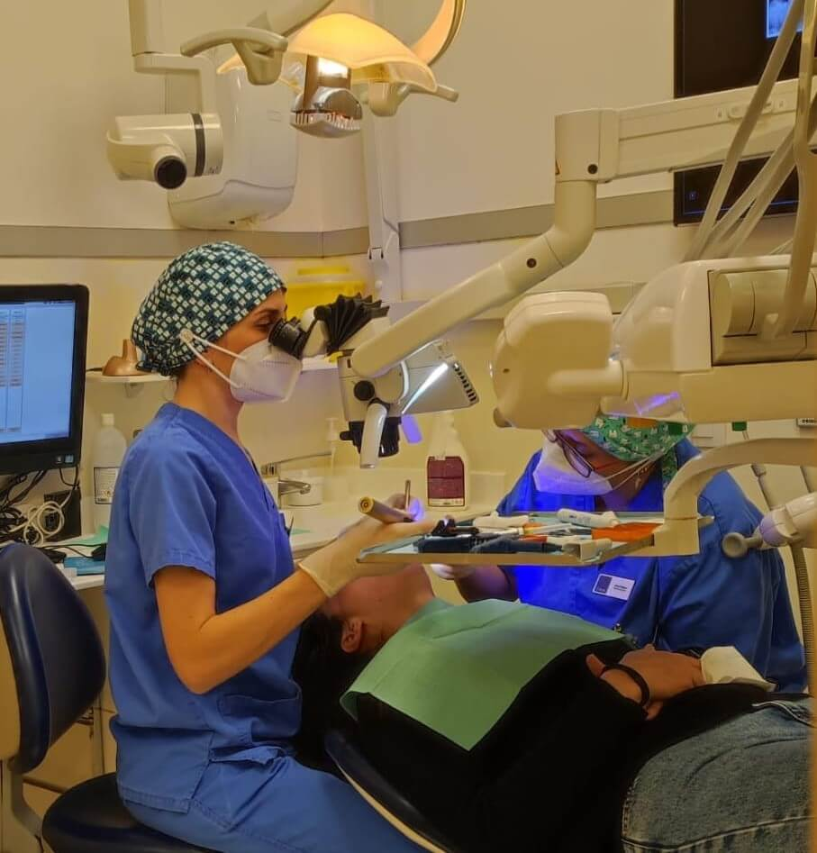

Endodoncia
Es el procedimiento a través del cual el profesional procede a retirar total o parcialmente el nervio, para posteriormente sellar el conducto donde se sitúa.
El objetivo principal de la Endodoncia es evitar la extracción del diente y los problemas que se estén causando en la zona. Con la Endodoncia Microscópica damos un paso más, porque utilizamos la mejor y última tecnología para lograr una visión exacta de la zona donde se va a actuar. Tal es así, que conseguimos ampliar la visualización de la pieza dental. De esta manera, conseguimos detectar con eficacia las áreas afectadas, para realizar una extracción e intervención más ajustada y mínimamente invasiva..
Beneficios
- El tratamiento de endodoncia permite salvar y reparar dientes gravemente descompuestos o infectados, permitiendo al paciente conservar su pieza dental original.
- Mínimamente invasivo.
- Evita la halitosis y otras consecuencias. Recuperar un diente infectado no solo es beneficioso para esa pieza dental, sino para la salud del conjunto de la boca.
- Recupera la masticación sin molestias.
- Previene tratamientos dentales más caros. Un diente descompuesto puede resultar en el movimiento de los dientes adyacentes. Por tanto, con un tratamiento de endodoncia que recupere la salud de una pieza dental también se puede prevenir la necesidad de tratamientos más caros como la ortodoncia a futuro.
Tu sonrisa es única.